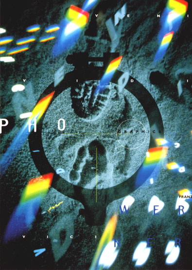

Designing With Light
Designing With Light
Examples from book



Hello, My name is Franz Werner and I am looking for supporters to participate in my crowdfunding project for my publication “Designing with Light” which contains student work of my classes which I have been teaching since the early 80’s at the Rhode Island School of Design.
In order to maintain freedom and integrity for my publication I chose self-publishing which requires independent financing for high quality printing and binding of this hard cover book.
The book contains 00 projects all the way from the wet photography method to the digital videography accompanied by diagrams explaining the process involved. I want to make this work public To democratize art This book will be a wonderful inspiration for anybody who appreciates art and design and to get connected with form and function.
This book is a tribute to my students but also to my teachers
…
I had the opportunity to study with the creme de la creme although I'm not nearly accomplished as my teachers but I always felt an obligation to share. Therefore, my contribution will be to in form of workshops to High Schools, Community Colleges, and the less fortunate. I would like to close by citing Einstein's quote: "imagination is more important than knowledge”